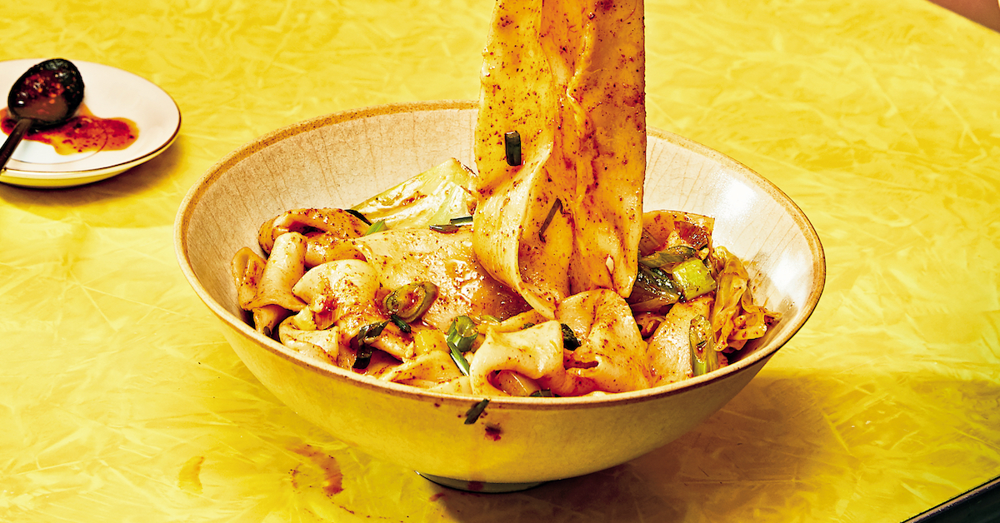

Biang-Biang Noodles Recipe

Description
Chinese noodles seared with hot oil, and topped with fragrant aromatics
and traditional spices. Rough it up.
Ingredients
For the Sauce:
- 1/2 cup soy sauce
- 2 1/2 tbsp black vinegar
- 1/2 tbsp oystersauce
- 1/4 tsp sugar
- 1/2 star anise pod
- 1/4 tsp Sichuan peppercorns
- 1 bay leaf
- Pinch of salt
- 1/2 tsp fennel seeds
- 2 cm slice of ginger
- Dash of white pepper powder
For the Noodles:
- Flat noodles
- Chopped napa cabbage
- 2 1/2 tbsp vegetable oil
- 1 tbsp red chili powder
- 1 tbsp pureed garlic
- 2 chopped green onion
- 1/2 diced celery
- Cooked ground meat (salted and peppered)
Steps
-
In a saucepan combine all the sauce ingredients with 2 tbsp of water.
Bring to a boil over high heat.
-
Once boiling, turn the heat down to a low boil and cook for 2 minutes.
Then turn off the heat and let sit for 10 minutes. Set aside.
-
Bring a large pot of water to full boil. Add noodles to boiling water.
Once cooked, drain noodles and set aside.
- Cook cabbage briefly in the noodle water. Strain out.
- In a skillet, cook the garlic, celery, and cabbage.
-
Add noodles, cooked veggies, and sauce to a bowl and stir to combine.
Then place chili powder and green onion in a little pile on top of the
noodles.
-
In a skillet, heat the vegetable oil over high heat. Drizzle over
aromatics until every bit gets sizzled. Stir and serve!